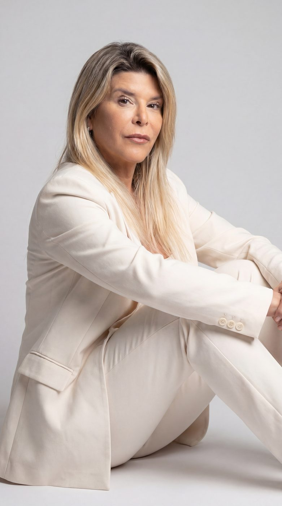

01
Liderança sem barreiras
De Síndico a Empresário
O caminho real para crescer no setor de condomínios, contado por quem fez essa travessia na prática.
Sindicatura & Lifestyle
Um dos principais nomes do mercado condominial brasileiro. À frente da Sindicompany e da Condo Academy, a Ju fala de gestão de condomínio de um jeito que síndico entende e morador escuta.
A história da Ju começou cedo. Aos 15 anos ela já estava na construtora do pai, aprendendo na obra como as coisas funcionam de verdade.
Aos 20, fundou um family office. Esse caminho a levou a abrir uma administradora de aluguéis e, mais tarde, ao mundo da administração condominial e da sindicatura profissional. Hoje, mesmo longe do dia a dia da operação, sua carreira de síndica segue ligada à empresa que ela mesma construiu.
Hoje a Sindicompany tem 91 profissionais. Foi justamente para treinar esse time, sem perder qualidade enquanto a empresa crescia, que a Ju criou a Condo Academy. O que era treinamento interno virou uma escola que hoje forma síndicos, conselheiros, porteiros e administradoras pelo país.
De briga de vizinho a segurança em prédio de luxo, a Ju já comentou esses assuntos em O Globo, IstoÉ, Terra, iG e no Estado de Minas.
De Virgínia Fonseca a Maíra Cardi: famosas podem enfrentar desafios durante a construção de mansões.
Ler matériaMansão em obra: os desafios da extensão da casa dos sonhos dentro de um condomínio.
Ler matériaEntenda como celebridades podem reforçar a segurança em condomínios de luxo.
Ler matériaConflito com Mara Maravilha reacende o debate sobre o sossego condominial.
Ler matériaMãe de Marília Mendonça terá nova casa em condomínio de luxo.
Ler matériaEla prende a plateia do começo ao fim, com história real e ideias que o síndico consegue aplicar já na próxima reunião.
O caminho real para crescer no setor de condomínios, contado por quem fez essa travessia na prática.
Como o síndico mantém autoridade e serenidade mesmo no caos do grupo de WhatsApp.
Como usar Canva, Instagram e ideias inesperadas para atrair de verdade a atenção dos moradores.
“A palestra da Juliana foi um dos pontos altos do nosso evento. Presença envolvente, comunicação afiada. Inspirou síndicos e profissionais a repensarem suas práticas e a acreditarem no poder de uma gestão humana, estratégica e transformadora.
SindicoNet
“A participação da Juliana no CONASI foi simplesmente memorável. Uniu conteúdo de alto nível, carisma e uma abordagem prática que tocou diretamente a realidade dos síndicos brasileiros. Uma verdadeira aula de liderança, propósito e inovação.
CONASI
“A Ju veio ao nosso evento e produziu muitos conteúdos que exaltaram a marca e trouxeram muito público. Super indico.
Nutricar
“Trabalhar com a Ju foi muito bom. Lançamos produtos e contamos com ela para produzir conteúdo e ajudar a propagar. Foi um grande sucesso. Indico muito a sua influência.
Expo Síndico
Publicidade paga, conteúdo de marca, palestras e presença em eventos, sempre com a autenticidade que virou a cara da Ju.

Tem uma proposta de parceria, palestra ou colaboração? Me escreve, vou adorar conversar com você:
contato@dicadajumoreira.com.br